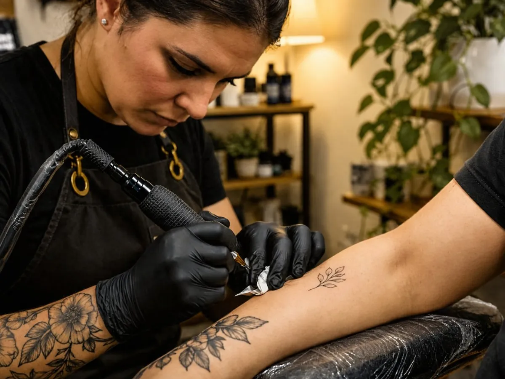

Tattooshop in Nijmegen: de juiste tatoeëerder voor jouw stijl
Bijgewerkt op 21 november 2026.
Een tattoo hou je je hele leven, dus je kiest een tatoeëerder die goed is in de stijl die jij wilt. Daarom zetten we de tattooshops in Nijmegen op een rij per stijl, van dunne fineline tot kleurrijk neotraditional.

Zo hebben we gekozen
We lazen in oktober 2026 de websites van de tattooshops in onze bedrijvengids en keken welke stijlen de artiesten zelf noemen. Veel studio's hebben meerdere artiesten met elk een eigen stijl, dus bekijk altijd het portfolio van de artiest die je kiest.
Goed om te weten: de meeste studio's werken alleen op afspraak. Stuur bij je aanvraag een paar voorbeeldbeelden mee, en de grootte en plek op je lichaam.
Fineline en kleine tattoos
Studio Taskani: fineline en microtattoos
Aan de Tarweweg zet Studio Taskani fineline- en microtattoos: dunne lijntjes, puntjeswerk, tekst en fijne schaduw met een enkele naald. Je kiest uit ontwerpen als sterrenbeelden, mandala's en vlinders, of je neemt je eigen idee mee.
Ze zetten er ook daith-piercings en doen permanente make-up. Een afspraak plan je zelf in de online agenda, en er zijn cadeaubonnen.
Goed voor: een eerste, kleine tattoo.
Li Wang Ink: privéstudio aan de Waal
Aan de Vismarkt heeft tatoeëerder Lilly Wang een privéstudio met uitzicht op de Waal. Je hebt haar volle aandacht, er komt niemand tussendoor. Ze werkt in fineline, dotwork, blackwork en mandala's, maar ook minimalistisch en in kleurrijke anime.
Elke tattoo begint met een gesprek. Een afspraak maak je het liefst via WhatsApp, met je idee en wat voorbeeldbeelden.
Goed voor: wie liever niet in een drukke shop zit.
Blackwork en black & grey
Studio Sable: alles in zwart en grijs
In de Nieuwstraat ligt de nadruk op blackwork, dotwork, fineline en black & grey. Elke artiest heeft een eigen stijl, van surrealisme en microrealisme tot manga, gothic en neotraditioneel werk. Elk ontwerp wordt speciaal voor jou getekend.
Bekijk het portfolio per artiest op de site en vul bij de artiest van je keuze een boekingsformulier in. Je moet minstens 18 zijn.
Goed voor: een uniek ontwerp in zwart en grijs.
Tattoo Studio Kanto: realisme en cover-ups
In de Van Welderenstraat werken de artiesten in black and grey realism, microrealisme en portretten, maar ook fineline, mandala's en dotwork. Ook voor een cover-up van een oude tattoo kun je hier terecht.
De studio is goedgekeurd door de GGD. Open van dinsdag tot en met zaterdag, een afspraak maak je via telefoon, WhatsApp of mail.
Goed voor: een portret of een oude tattoo wegwerken.
Kleur en neotraditional
Liquid Sky: neotraditional bij het station
Tegenover de fietsenstalling bij het station zit Liquid Sky, sinds 2016 in handen van Esmee. Zij werkt vooral met mandala's, semi-realistische stukken en neotraditional. Je kunt er ook toothgems laten plakken.
De shop is rustig en LGBTQ+-vriendelijk. Binnenlopen om over je ontwerp te praten mag, tatoeëren gaat op afspraak. Piercings zetten ze hier niet.
Goed voor: kleurrijk werk en een ontspannen sfeer.
Het Inktlokaal: eerst sparren met koffie
In de Vasim aan de Winselingseweg spar je eerst rustig over stijl, formaat en plek, met een kop koffie erbij. De artiesten werken van fineline tot neotraditional met felle kleuren, realistische portretten en blackwork, en ook cover-ups.
Parkeren is gratis. Kom langs voor een adviesgesprek of plan via de site een afspraak.
Goed voor: wie nog twijfelt over het ontwerp.
Ornamentaal en Thaise bamboo tattoos
Isaan Tattoo Studio: van handpoke tot bamboo
In de Lange Hezelstraat werken meerdere artiesten met elk een eigen stijl: handpoke en fineline, mandala's, Thai-geïnspireerde bamboo tattoos, blackwork, Japans ornamentaal werk en realistische portretten. Het team denkt mee over welke artiest bij jouw idee past.
Binnenlopen voor vragen mag gewoon. Op dinsdag en vrijdag zetten ze ook piercings.
Goed voor: wie iets bijzonders zoekt.
Tabula Rasa: een huiskamer op het NYMA-terrein
Op het NYMA-terrein voelt deze privéstudio als een huiskamer: schoenen uit en even landen. De artiesten werken vooral in ornamental, blackwork, geometric, traditional en neotraditional.
De studio is queer positive en vegan-friendly, van zeep tot zalf, en de lunch is plantaardig. Er wordt alleen op afspraak gewerkt.
Goed voor: een groot ornamentaal stuk in een veilige sfeer.
Tattoo en piercing in Dukenburg
- Prikkers Tattoo Club aan het Zwanenveld: een persoonlijke sessie met één artiest, en een eigen piercingshop. Op werkdagen open tot zeven uur.
Alle tattooshops staan in de bedrijvengids onder tattoo.
Veelgestelde vragen
Welke tattooshop in Nijmegen is goed in fineline?
Studio Taskani is gespecialiseerd in fineline en microtattoos. Ook Li Wang Ink, Studio Sable en Isaan Tattoo Studio werken in fineline.
Waar laat je een cover-up zetten in Nijmegen?
Bij Tattoo Studio Kanto in de Van Welderenstraat en Het Inktlokaal in de Vasim.
Kun je in Nijmegen zonder afspraak een tattooshop binnenlopen?
Bij Isaan Tattoo Studio en Liquid Sky mag je binnenlopen om over je idee te praten. Het tatoeëren zelf gaat bijna overal op afspraak.
Waar laat je in Nijmegen een tattoo en een piercing zetten?
Bij Prikkers in Dukenburg, Isaan Tattoo Studio in de Lange Hezelstraat en Studio Taskani aan de Tarweweg.